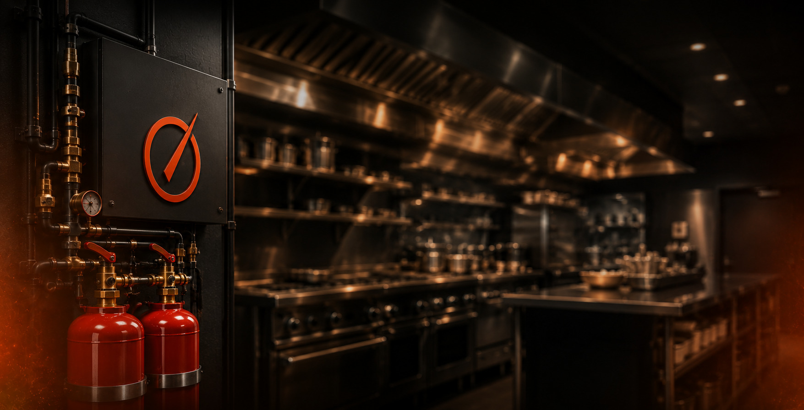

SOLUÇÕES BRIVAX
SERVIÇOS
Desenvolvemos soluções completas em prevenção e combate a incêndio para cozinhas industriais, hospitais, restaurantes, franquias e operações comerciais.
Desenvolvemos soluções completas em prevenção e combate a incêndio para cozinhas industriais, hospitais, restaurantes, franquias e operações comerciais.
Cada ambiente possui necessidades específicas de proteção. Por isso, desenvolvemos soluções personalizadas para reduzir riscos, proteger patrimônios e garantir a continuidade das operações dos nossos clientes.
Conheça abaixo os principais serviços oferecidos pela Brivax e descubra como podemos proteger o seu negócio.

Desenvolvido para cozinhas industriais e comerciais, o sistema atua automaticamente no combate a incêndios envolvendo gordura e óleo, protegendo equipamentos, colaboradores e a continuidade da operação.
Restaurantes, hospitais, hotéis, cozinhas industriais, redes de franquias, refeitórios corporativos e operações de alimentação em geral.
Ao detectar um princípio de incêndio, o sistema libera automaticamente o agente saponificante sobre a área protegida. O agente reage com a gordura aquecida, formando uma camada que resfria e abafa as chamas. Quando previsto em projeto, o sistema também utiliza CO₂ para proteger áreas complementares.
✔ Acionamento automático e manual.
✔ Redução dos danos ao patrimônio.
✔ Maior segurança para colaboradores.
✔ Continuidade da operação após ocorrências.
✔ Solução desenvolvida conforme normas técnicas.

Projetamos e implantamos sistemas convencionais e endereçáveis para identificação rápida de princípios de incêndio, proporcionando resposta imediata e maior segurança às operações.
Restaurantes, hospitais, indústrias, centros comerciais, cozinhas industriais, edifícios comerciais e qualquer ambiente que necessite de monitoramento contínuo contra princípios de incêndio.
Os detectores monitoram constantemente o ambiente. Ao identificar fumaça, o sistema envia imediatamente o sinal para a central de alarme, acionando alertas sonoros e visuais para permitir uma resposta rápida à emergência.
✔ Detecção precoce de incêndios.
✔ Monitoramento contínuo.
✔ Sistemas convencionais e endereçáveis.
✔ Integração com outros sistemas de segurança.
✔ Maior proteção para pessoas e patrimônio.
Realizamos vistorias técnicas para avaliar o estado dos sistemas de prevenção e combate a incêndio, identificando necessidades de manutenção, adequações e melhorias.
Empresas, restaurantes, hospitais, cozinhas industriais, shopping centers, franquias e demais estabelecimentos que necessitam manter seus sistemas em conformidade.
Nossa equipe realiza uma análise completa dos equipamentos instalados, verificando funcionamento, condições dos componentes e conformidade com as normas técnicas aplicáveis.
✔ Identificação preventiva de falhas.
✔ Maior confiabilidade dos sistemas.
✔ Apoio na conformidade técnica.
✔ Redução de riscos operacionais.
✔ Planejamento de futuras manutenções.


A eficiência de um sistema de prevenção depende diretamente da sua manutenção. A Brivax realiza inspeções periódicas, testes operacionais e substituição de componentes para garantir que todos os equipamentos permaneçam prontos para atuar quando necessário.
Sistemas de supressão, detecção de fumaça, centrais de alarme, extintores e demais equipamentos de prevenção e combate a incêndio.
Executamos verificações técnicas, limpeza, calibração, testes funcionais e substituição de componentes quando necessário, seguindo um plano de manutenção adequado para cada instalação.
✔ Aumento da vida útil dos equipamentos.
✔ Redução de falhas inesperadas.
✔ Maior confiabilidade do sistema.
✔ Atendimento às exigências técnicas.
✔ Continuidade operacional.
Fornecemos extintores adequados para cada tipo de risco, realizando dimensionamento, substituição, instalação e adequação conforme a necessidade de cada empreendimento.
Empresas, restaurantes, hospitais, comércios, condomínios, indústrias e diversos outros ambientes.
Após a avaliação do ambiente, identificamos os riscos existentes e definimos os equipamentos mais adequados para garantir proteção eficiente e conformidade com as exigências técnicas.
✔ Equipamentos certificados.
✔ Dimensionamento correto.
✔ Instalação profissional.
✔ Maior segurança para o ambiente.
✔ Conformidade com as normas.


A sinalização é parte essencial de qualquer sistema de prevenção contra incêndio. Fornecemos e instalamos placas que orientam rotas de fuga, localização de equipamentos e procedimentos de emergência.
Restaurantes, hospitais, cozinhas industriais, centros comerciais, condomínios, indústrias e demais ambientes que necessitam de sinalização de emergência.
Realizamos o levantamento das necessidades do ambiente e instalamos a sinalização adequada para facilitar a orientação dos ocupantes durante situações de emergência.
✔ Maior segurança para colaboradores e clientes.
✔ Organização das rotas de fuga.
✔ Identificação rápida dos equipamentos de emergência.
✔ Adequação às normas técnicas.
✔ Melhor orientação em situações críticas.
Cada projeto possui necessidades específicas. A Brivax desenvolve soluções personalizadas em prevenção e combate a incêndio, realizando avaliações técnicas para indicar o sistema mais adequado para cada operação.

Entre em contato com a equipe da Brivax e solicite um orçamento sem compromisso.
SOLICITAR ORÇAMENTO